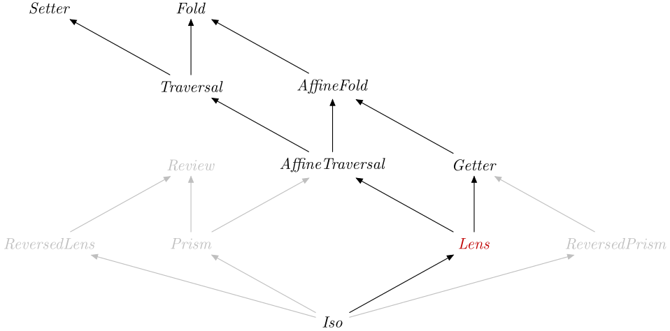

| Safe Haskell | Safe-Inferred |
|---|---|
| Language | Haskell2010 |
Optics.Lens
Description
A Lens is a generalised or first-class field.
If we have a value s :: S, and a l :: , we can get
the "field value" of type Lens' S AA using view l sover (or set).
For example, given the following definitions:
>>>data Human = Human { _name :: String, _location :: String } deriving Show>>>let human = Human "Bob" "London"
we can make a Lens for _name field:
>>>let name = lens _name $ \s x -> s { _name = x }
which we can use as a Getter:
>>>view name human"Bob"
or a Setter:
>>>set name "Robert" humanHuman {_name = "Robert", _location = "London"}
Synopsis
- type Lens s t a b = Optic A_Lens NoIx s t a b
- type Lens' s a = Optic' A_Lens NoIx s a
- lens :: (s -> a) -> (s -> b -> t) -> Lens s t a b
- equality' :: Lens a b a b
- alongside :: (Is k A_Lens, Is l A_Lens) => Optic k is s t a b -> Optic l js s' t' a' b' -> Lens (s, s') (t, t') (a, a') (b, b')
- united :: Lens' a ()
- withLens :: Is k A_Lens => Optic k is s t a b -> ((s -> a) -> (s -> b -> t) -> r) -> r
- data A_Lens :: OpticKind
- type LensVL s t a b = forall f. Functor f => (a -> f b) -> s -> f t
- type LensVL' s a = LensVL s s a a
- lensVL :: LensVL s t a b -> Lens s t a b
- toLensVL :: Is k A_Lens => Optic k is s t a b -> LensVL s t a b
- withLensVL :: Is k A_Lens => Optic k is s t a b -> (LensVL s t a b -> r) -> r
Formation
Introduction
Elimination
A Lens is in particular a Getter and a
Setter, therefore you can specialise types to obtain:
view::Lens's a -> s -> a
over::Lenss t a b -> (a -> b) -> s -> tset::Lenss t a b -> b -> s -> t
If you want to view a type-modifying Lens that is
insufficiently polymorphic to be used as a type-preserving Lens', use
getting:
view.getting::Lenss t a b -> s -> a
Computation
Well-formedness
Additional introduction forms
See Data.Tuple.Optics for Lenses for tuples.
If you're looking for chosen, it was moved to Optics.IxLens.
alongside :: (Is k A_Lens, Is l A_Lens) => Optic k is s t a b -> Optic l js s' t' a' b' -> Lens (s, s') (t, t') (a, a') (b, b') Source #
Make a Lens from two other lenses by executing them on their respective
halves of a product.
>>>(Left 'a', Right 'b') ^. alongside chosen chosen('a','b')
>>>(Left 'a', Right 'b') & alongside chosen chosen .~ ('c','d')(Left 'c',Right 'd')
We can always retrieve a () from any type.
>>>view united "hello"()
>>>set united () "hello""hello"
Additional elimination forms
Subtyping
data A_Lens :: OpticKind Source #
Tag for a lens.
Instances

van Laarhoven encoding
The van Laarhoven encoding of lenses is isomorphic to the profunctor
encoding used internally by optics, but converting back and forth may
have a performance penalty.
type LensVL s t a b = forall f. Functor f => (a -> f b) -> s -> f t Source #
Type synonym for a type-modifying van Laarhoven lens.
lensVL :: LensVL s t a b -> Lens s t a b Source #
Build a lens from the van Laarhoven representation.